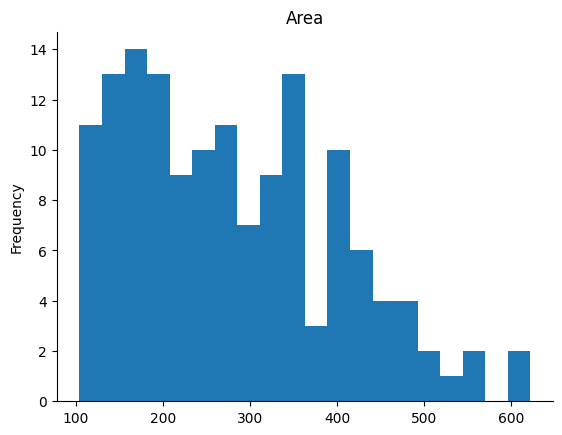

Proyek Sains Data - Univariate Single-Step#
Air Passenger Forecasting#
Nama : Riskina Salsabilla Bayzura
NIM : 22011100015
Kelas : IF5D
Tujuan#
Pada studi kasus saya kali ini, saya akan melakukan peralaman (forecasting) jumlah penumpang yang melakukan perjalanan menggunakan pesawat udara berdasarkan data time-series.
DATA UNDERSTANDING#
Requirment#
import pandas as pd
import numpy as np
import seaborn as sns
import matplotlib.pyplot as plt
import plotly.express as px
from scipy import stats
from scipy.stats import skew
from sklearn.metrics import mean_squared_error, mean_absolute_error, r2_score
from sklearn.ensemble import BaggingRegressor, RandomForestRegressor, GradientBoostingRegressor, VotingRegressor
from sklearn.linear_model import LinearRegression
from sklearn.model_selection import train_test_split, TimeSeriesSplit
from sklearn.preprocessing import StandardScaler
import statsmodels.api as sm
import statsmodels.tsa.api as smt
from itertools import combinations
from statsmodels.tsa.stattools import adfuller
from statsmodels.tsa.stattools import acf, pacf
from statsmodels.tsa.arima_model import ARIMA as ARIMA
---------------------------------------------------------------------------
ModuleNotFoundError Traceback (most recent call last)
Cell In[1], line 5
3 import seaborn as sns
4 import matplotlib.pyplot as plt
----> 5 import plotly.express as px
7 from scipy import stats
8 from scipy.stats import skew
ModuleNotFoundError: No module named 'plotly'
Deskripsi Data#
Load Data dan Menampilkan Beberapa Baris Pertama Dataset#
df = pd.read_csv('/content/drive/MyDrive/PSD/TugasUTS/AirPassengers.csv')
df.head()
| Month | #Passengers | |
|---|---|---|
| 0 | 1949-01 | 112 |
| 1 | 1949-02 | 118 |
| 2 | 1949-03 | 132 |
| 3 | 1949-04 | 129 |
| 4 | 1949-05 | 121 |
Penjelasan Fitur#
EDA (Exploratory Data Analisys)#
Menampilkan Informasi Data#
print(f"shape: {df.shape}")
print(f"columns: {df.columns}")
print(f"informations: {df.info}")
shape: (144, 2)
columns: Index(['Month', '#Passengers'], dtype='object')
informations: <bound method DataFrame.info of Month #Passengers
0 1949-01 112
1 1949-02 118
2 1949-03 132
3 1949-04 129
4 1949-05 121
.. ... ...
139 1960-08 606
140 1960-09 508
141 1960-10 461
142 1960-11 390
143 1960-12 432
[144 rows x 2 columns]>
Menampilkan Missing Value#
df.isnull().sum()
| 0 | |
|---|---|
| Month | 0 |
| #Passengers | 0 |
Statistik Deskriptif#
df.describe()
| #Passengers | |
|---|---|
| count | 144.000000 |
| mean | 280.298611 |
| std | 119.966317 |
| min | 104.000000 |
| 25% | 180.000000 |
| 50% | 265.500000 |
| 75% | 360.500000 |
| max | 622.000000 |
Mengkonversi Tanggal#
df['Date'] = pd.to_datetime(df['Month'])
df = df.drop(columns = 'Month')
df = df.set_index('Date')
df = df.rename(columns = {'#Passengers':'Passengers'})
df.head()
| Passengers | |
|---|---|
| Date | |
| 1949-01-01 | 112 |
| 1949-02-01 | 118 |
| 1949-03-01 | 132 |
| 1949-04-01 | 129 |
| 1949-05-01 | 121 |
Distribusi Data#
df['Passengers'].plot(kind='hist', bins=20, title='Area')
plt.gca().spines[['top', 'right',]].set_visible(False)

Visualisasi Data Penumpang#
plt.figure(figsize = (15,5))
df['Passengers'].plot();
Data Preprocessing#
Normalisasi Data#
np.random.seed(42)
n = 144
t = np.arange(n)
y_skewed = np.random.exponential(scale=2, size=n) # Skewed right distribution
plt.figure(figsize=(10, 6))
plt.plot(t, y_skewed, label='Original Skewed Time Series')
plt.title('Original Skewed Right Time Series Data')
plt.xlabel('Time')
plt.ylabel('Passengers')
plt.legend()
plt.show()
print(f"Original skewness: {skew(df['Passengers']):.4f}")
Original skewness: 0.5771
Tidak diperlukan normalisasi data
Modeling#
Modeling Menggunakan SARIMA (Seasonal Autoregressive Integrated Moving Average)#
def test_stationarity(timeseries):
#Determing rolling statistics
MA = timeseries.rolling(window=12).mean()
MSTD = timeseries.rolling(window=12).std()
#Plot rolling statistics:
plt.figure(figsize=(15,5))
orig = plt.plot(timeseries, color='blue',label='Original')
mean = plt.plot(MA, color='red', label='Rolling Mean')
std = plt.plot(MSTD, color='black', label = 'Rolling Std')
plt.legend(loc='best')
plt.title('Rolling Mean & Standard Deviation')
plt.show(block=False)
#Perform Dickey-Fuller test:
print('Results of Dickey-Fuller Test:')
dftest = adfuller(timeseries, autolag='AIC')
dfoutput = pd.Series(dftest[0:4], index=['Test Statistic','p-value','#Lags Used','Number of Observations Used'])
for key,value in dftest[4].items():
dfoutput['Critical Value (%s)'%key] = value
print(dfoutput)
def tsplot(y, lags=None, figsize=(12, 7), style='bmh'):
if not isinstance(y, pd.Series):
y = pd.Series(y)
with plt.style.context(style):
fig = plt.figure(figsize=figsize)
layout = (2, 2)
ts_ax = plt.subplot2grid(layout, (0, 0), colspan=2)
acf_ax = plt.subplot2grid(layout, (1, 0))
pacf_ax = plt.subplot2grid(layout, (1, 1))
y.plot(ax=ts_ax)
p_value = sm.tsa.stattools.adfuller(y)[1]
ts_ax.set_title('Time Series Analysis Plots\n Dickey-Fuller: p={0:.5f}'.format(p_value))
smt.graphics.plot_acf(y, lags=lags, ax=acf_ax)
smt.graphics.plot_pacf(y, lags=lags, ax=pacf_ax)
plt.tight_layout()
STL decomposition#
dec = sm.tsa.seasonal_decompose(df['Passengers'],period = 12, model = 'multiplicative').plot()
plt.show()
Mengetes Stasioner#
test_stationarity(df['Passengers'])
Results of Dickey-Fuller Test:
Test Statistic 0.815369
p-value 0.991880
#Lags Used 13.000000
Number of Observations Used 130.000000
Critical Value (1%) -3.481682
Critical Value (5%) -2.884042
Critical Value (10%) -2.578770
dtype: float64
ACF and PACF plots#
tsplot(df['Passengers'])
Implementing SARIMA#
model = sm.tsa.statespace.SARIMAX(df['Passengers'],order = (2,1,2),seasonal_order = (0,1,1,12))
model_fit = model.fit()
print(model_fit.summary())
/usr/local/lib/python3.10/dist-packages/statsmodels/tsa/base/tsa_model.py:473: ValueWarning: No frequency information was provided, so inferred frequency MS will be used.
self._init_dates(dates, freq)
/usr/local/lib/python3.10/dist-packages/statsmodels/tsa/base/tsa_model.py:473: ValueWarning: No frequency information was provided, so inferred frequency MS will be used.
self._init_dates(dates, freq)
SARIMAX Results
============================================================================================
Dep. Variable: Passengers No. Observations: 144
Model: SARIMAX(2, 1, 2)x(0, 1, [1], 12) Log Likelihood -503.968
Date: Sun, 08 Dec 2024 AIC 1019.935
Time: 14:46:51 BIC 1037.186
Sample: 01-01-1949 HQIC 1026.945
- 12-01-1960
Covariance Type: opg
==============================================================================
coef std err z P>|z| [0.025 0.975]
------------------------------------------------------------------------------
ar.L1 0.3966 0.422 0.940 0.347 -0.430 1.223
ar.L2 0.3538 0.317 1.115 0.265 -0.268 0.976
ma.L1 -0.7648 0.432 -1.769 0.077 -1.612 0.083
ma.L2 -0.2060 0.414 -0.497 0.619 -1.018 0.606
ma.S.L12 -0.1033 0.112 -0.921 0.357 -0.323 0.117
sigma2 127.2934 14.232 8.944 0.000 99.400 155.187
===================================================================================
Ljung-Box (L1) (Q): 0.02 Jarque-Bera (JB): 11.10
Prob(Q): 0.88 Prob(JB): 0.00
Heteroskedasticity (H): 2.57 Skew: 0.05
Prob(H) (two-sided): 0.00 Kurtosis: 4.42
===================================================================================
Warnings:
[1] Covariance matrix calculated using the outer product of gradients (complex-step).
In - Sample Forecasting#
size = int(len(df) - 30)
train, test = df['Passengers'][0:size], df['Passengers'][size:len(df)]
print('\t SARIMA MODEL : In - Sample Forecasting \n')
history = [x for x in train]
predictions = []
for t in range(len(test)):
model = sm.tsa.statespace.SARIMAX(history,order = (2,1,2),seasonal_order = (0,1,1,12))
model_fit = model.fit()
output = model_fit.forecast()
yhat = output[0]
predictions.append(float(yhat))
obs = test[t]
history.append(obs)
print('predicted = %f, expected = %f' % (yhat, obs))
SARIMA MODEL : In - Sample Forecasting
<ipython-input-17-3bf6823fef1f>:19: FutureWarning: Series.__getitem__ treating keys as positions is deprecated. In a future version, integer keys will always be treated as labels (consistent with DataFrame behavior). To access a value by position, use `ser.iloc[pos]`
obs = test[t]
predicted = 479.085765, expected = 491.000000
predicted = 490.553509, expected = 505.000000
predicted = 441.276125, expected = 404.000000
predicted = 357.274099, expected = 359.000000
predicted = 315.250484, expected = 310.000000
predicted = 347.831879, expected = 337.000000
/usr/local/lib/python3.10/dist-packages/statsmodels/base/model.py:607: ConvergenceWarning: Maximum Likelihood optimization failed to converge. Check mle_retvals
warnings.warn("Maximum Likelihood optimization failed to "
predicted = 344.251448, expected = 360.000000
predicted = 336.839209, expected = 342.000000
predicted = 387.593116, expected = 406.000000
predicted = 387.333485, expected = 396.000000
predicted = 408.192789, expected = 420.000000
predicted = 485.988165, expected = 472.000000
predicted = 529.031343, expected = 548.000000
predicted = 551.914006, expected = 559.000000
predicted = 459.061270, expected = 463.000000
predicted = 411.970100, expected = 407.000000
predicted = 358.421153, expected = 362.000000
predicted = 384.945724, expected = 405.000000
predicted = 420.144085, expected = 417.000000
predicted = 397.755393, expected = 391.000000
predicted = 451.335502, expected = 419.000000
predicted = 415.675182, expected = 461.000000
predicted = 465.295980, expected = 472.000000
predicted = 529.835405, expected = 535.000000
predicted = 599.299657, expected = 622.000000
predicted = 626.292198, expected = 606.000000
predicted = 513.891979, expected = 508.000000
predicted = 450.136741, expected = 461.000000
predicted = 411.653931, expected = 390.000000
predicted = 438.411438, expected = 432.000000
Visualisasi Prediksi#
predictions_series = pd.Series(predictions, index = test.index)
fig,ax = plt.subplots(nrows = 1,ncols = 1,figsize = (15,5))
plt.subplot(1,1,1)
plt.plot(df['Passengers'],label = 'Expected Values')
plt.plot(predictions_series,label = 'Predicted Values');
plt.legend(loc="upper left")
plt.show()
error = np.sqrt(mean_squared_error(test,predictions))
print('Test RMSE: %.4f' % error)
Test RMSE: 16.9251
Modeling Menggunakan Ensemble Learning Bagging#
Menambahkan Bulan#
df['Month'] = np.arange(len(df)) + 1
df
| Passengers | Month | |
|---|---|---|
| Date | ||
| 1949-01-01 | 112 | 1 |
| 1949-02-01 | 118 | 2 |
| 1949-03-01 | 132 | 3 |
| 1949-04-01 | 129 | 4 |
| 1949-05-01 | 121 | 5 |
| ... | ... | ... |
| 1960-08-01 | 606 | 140 |
| 1960-09-01 | 508 | 141 |
| 1960-10-01 | 461 | 142 |
| 1960-11-01 | 390 | 143 |
| 1960-12-01 | 432 | 144 |
144 rows 2 columns
Sliding Windows#
X = df['Month']
y = df['Passengers']
def create_sliding_window_dataset(df, window_size):
X, y = [], []
for i in range(window_size, len(df)):
X.append(df[i-window_size:i])
y.append(df[i])
return np.array(X), np.array(y)
# Membuat dataset sliding windows
window_size = 12
X_window, y_window = create_sliding_window_dataset(df['Passengers'], window_size)
print(f"Shape of X: {X_window.shape}")
print(f"Shape of y: {y_window.shape}")
# Contoh menampilkan data X dan y untuk beberapa window pertama
print("Beberapa data X (sliding window):")
for i in range(3):
print(f"Window {i+1}: {X_window}")
print("\nBeberapa data y (target):")
for i in range(3):
print(f"Target {i+1}: {y_window}")
Shape of X: (132, 12)
Shape of y: (132,)
Beberapa data X (sliding window):
Window 1: [[112 118 132 ... 119 104 118]
[118 132 129 ... 104 118 115]
[132 129 121 ... 118 115 126]
...
[407 362 405 ... 622 606 508]
[362 405 417 ... 606 508 461]
[405 417 391 ... 508 461 390]]
Window 2: [[112 118 132 ... 119 104 118]
[118 132 129 ... 104 118 115]
[132 129 121 ... 118 115 126]
...
[407 362 405 ... 622 606 508]
[362 405 417 ... 606 508 461]
[405 417 391 ... 508 461 390]]
Window 3: [[112 118 132 ... 119 104 118]
[118 132 129 ... 104 118 115]
[132 129 121 ... 118 115 126]
...
[407 362 405 ... 622 606 508]
[362 405 417 ... 606 508 461]
[405 417 391 ... 508 461 390]]
Beberapa data y (target):
Target 1: [115 126 141 135 125 149 170 170 158 133 114 140 145 150 178 163 172 178
199 199 184 162 146 166 171 180 193 181 183 218 230 242 209 191 172 194
196 196 236 235 229 243 264 272 237 211 180 201 204 188 235 227 234 264
302 293 259 229 203 229 242 233 267 269 270 315 364 347 312 274 237 278
284 277 317 313 318 374 413 405 355 306 271 306 315 301 356 348 355 422
465 467 404 347 305 336 340 318 362 348 363 435 491 505 404 359 310 337
360 342 406 396 420 472 548 559 463 407 362 405 417 391 419 461 472 535
622 606 508 461 390 432]
Target 2: [115 126 141 135 125 149 170 170 158 133 114 140 145 150 178 163 172 178
199 199 184 162 146 166 171 180 193 181 183 218 230 242 209 191 172 194
196 196 236 235 229 243 264 272 237 211 180 201 204 188 235 227 234 264
302 293 259 229 203 229 242 233 267 269 270 315 364 347 312 274 237 278
284 277 317 313 318 374 413 405 355 306 271 306 315 301 356 348 355 422
465 467 404 347 305 336 340 318 362 348 363 435 491 505 404 359 310 337
360 342 406 396 420 472 548 559 463 407 362 405 417 391 419 461 472 535
622 606 508 461 390 432]
Target 3: [115 126 141 135 125 149 170 170 158 133 114 140 145 150 178 163 172 178
199 199 184 162 146 166 171 180 193 181 183 218 230 242 209 191 172 194
196 196 236 235 229 243 264 272 237 211 180 201 204 188 235 227 234 264
302 293 259 229 203 229 242 233 267 269 270 315 364 347 312 274 237 278
284 277 317 313 318 374 413 405 355 306 271 306 315 301 356 348 355 422
465 467 404 347 305 336 340 318 362 348 363 435 491 505 404 359 310 337
360 342 406 396 420 472 548 559 463 407 362 405 417 391 419 461 472 535
622 606 508 461 390 432]
<ipython-input-20-34a66ffd41ce>:8: FutureWarning: Series.__getitem__ treating keys as positions is deprecated. In a future version, integer keys will always be treated as labels (consistent with DataFrame behavior). To access a value by position, use `ser.iloc[pos]`
y.append(df[i])
Membagi Data#
# Membagi data menjadi training dan testing
X_train_w, X_test_w, y_train_w, y_test_w = train_test_split(X_window, y_window, test_size=0.2, shuffle=False)
# Scaling fitur menggunakan StandardScaler
scaler = StandardScaler()
X_train_w_scaled = scaler.fit_transform(X_train_w)
X_test_w_scaled = scaler.transform(X_test_w)
print(f"Shape of X_train: {X_train_w_scaled.shape}")
print(f"Shape of y_train: {y_train_w.shape}")
print(f"Shape of X_test: {X_test_w_scaled.shape}")
print(f"Shape of y_test: {y_test_w.shape}")
Shape of X_train: (105, 12)
Shape of y_train: (105,)
Shape of X_test: (27, 12)
Shape of y_test: (27,)
# Base Model#
rf_regressor = RandomForestRegressor(n_estimators=100, random_state=42)
gb_regressor = GradientBoostingRegressor(n_estimators=100, random_state=42)
linear_model = LinearRegression()
# Menggunakan VotingRegressor untuk menggabungkan prediksi
voting_regressor = VotingRegressor(estimators=[('rf', rf_regressor), ('gb', gb_regressor), ('linear', linear_model)])
# Build the Bagging Regressor with the VotingRegressor as the base model
bagging_model_voting = BaggingRegressor(estimator=voting_regressor, n_estimators=100, random_state=42)
bagging_model_voting.fit(X_train_w_scaled, y_train_w)
# Predicting on the test set
y_pred_voting = bagging_model_voting.predict(X_test_w_scaled)
# Calculate performance metrics
rmse_voting = np.sqrt(mean_squared_error(y_test_w, y_pred_voting))
mse_voting = mean_squared_error(y_test_w, y_pred_voting)
mae_voting = mean_absolute_error(y_test_w, y_pred_voting)
r2_voting = r2_score(y_test_w, y_pred_voting)
Prediksi Menggunakan Sliding Window#
# Predicting the next 5 months using the ensemble sliding window
last_window = df['Passengers'].values[-window_size:]
predictions_voting = []
for _ in range(12):
last_window_scaled = scaler.transform(last_window.reshape(1, -1))
next_pred = bagging_model_voting.predict(last_window_scaled)
predictions_voting.append(next_pred[0])
# Update the window with the new prediction
last_window = np.append(last_window[1:], next_pred)
Visualisasi Hasil Prediksi#
# Plotting the actual vs predicted values with the sliding window approach (3 base models)
plt.figure(figsize=(15, 6))
plt.plot(df.index, df['Passengers'], label='Actual Production', color='blue')
plt.plot(pd.date_range(start=df.index[-1], periods=13, freq='ME')[1:], predictions_voting, label='Forecasted Production (3 base models)', color='green')
plt.title('Air Passengers (Next 12 Months) - Sliding Window with 3 Base Models')
plt.xlabel('Date')
plt.ylabel('Passengers')
plt.legend()
plt.show()
# rmse_voting, mse_voting, mae_voting, r2_voting, predictions_voting
print("RMSE:", rmse_voting)
print("MSE", mse_voting)
print("MAE:", mae_voting)
print("R^2 Score:", r2_voting)
RMSE: 37.71304238496512
MSE 1422.273565930176
MAE: 27.271748002329062
R^2 Score: 0.7760815360400909